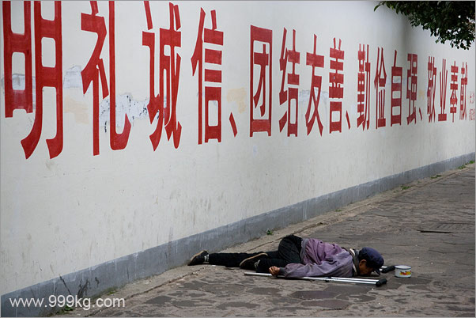

| www.999kg.com.cn 杨飞的摄影和写作 | |||||||||||||||||
| 首页 / 记录中国专题 / 湖南省 / 长沙 / | |||||||||||||||||
|
长沙街头的乞丐
2007年3月
2004年3月的一天特别寒冷。我爸爸住在长沙市第四医院，依旧半瘫痪，所以那时候我特别富有同情心。在医院门口我发现一个孕妇跪在地上。天飘起了雨丝，但这个孕妇依然没有要走的意思。街上人行匆匆，没有人停下来给钱给她。我走过去细看这孕妇脚下的求助信上写： “我和丈夫来贵地找工。因找不到事做，我只说了几句：你养得起我吗？而他却大发脾气跟我吵，说不管我就不管。一走就十几天。我无奈之下只好向大家求助点路费回家。愿好人一生平安！谢谢！” 如果平时也就算了，因为我家楼下经常有各色乞讨人员。但那天很冷开始下雨，看到这个孕妇我实在于心不忍。我很关切的问她是否凑够了回家的钱，要是没有的话可以去长沙市救助站求助。 自从2003年3月孙志刚在广州收容所被打死后，中国各地的收容遣送所都改成了救助站，凡是没钱回家的人都可以去那寻求帮助。
医院门口跪在地上的孕妇。Photo ID:changsha0342.
这个孕妇看我没有给钱的意思，扭头不理我。报纸上都宣传说有困难找警察，一个孕妇下雨天在街头万一有个三长两短，那也太丢社会主义国家的脸了，天理良心何在？我觉得警察叔叔应该管这事情。于是我拨通了110报警，说有一个孕妇在街头需要帮助。110的警察接线员妹妹说你说清楚一点，到底怎么回事？我说一个孕妇在荣湾镇四医院门口跪在地上需要帮助。110妹妹说你去找派出所好了，这是橘洲派出所的辖地。我很生气，好心报警你居然不接警，我说您是第几号话务员？如果您不派警察叔叔来我马上去长沙市公安局投诉你。110妹妹说那好，等十分钟就派人来。 我打电话声音比较大，不少人都过来围观。这孕妇妹妹看人越来越多，站起来收好地上的求助信就走。我一把拦住了她：我打了电话叫警察叔叔来帮助你，一会儿你不见了那还不把我给抓了去？孕妇妹妹说你管的着吗？说着推开人群就要走。我说：站住！再走一步我就扁你。 十五分钟后警察终于来了。我和孕妇都被带到橘洲派出所。一位妹妹警察把孕妇带到一间房问话。五分钟后她们出来了，警察妹妹手里拿着一个方形枕头，孕妇妹妹的肚子瘪了下去 - 孩子没有了。
橘洲派出所的警察叔叔检查孕妇的提包，左边是求助信。Photo ID:changsha0343.
这件事我很生气，浪费了我两个小时。作为一个人文摄影师最重要的是同情心。同情心也是支撑我们这个社会的重要道德支柱，可是不少人利用大家的同情心来骗钱，真是良心大大的坏了。我是没那么容易上当的，骗子都叫我师傅（有兴趣可阅读我的通缉重大诈骗嫌疑人胡国这篇文章）。 五年来我拍了不少长沙的街头乞丐，在拍摄的过程中我数次历险，差点被乞丐打。幸亏我跑得快，免受了皮肉之苦，但2004年的一天在五一路平和堂外面一个乞丐飞起拐杖砸来，我用三角架挡住，回来一看三角架的主螺丝被砸弯，这日本金钟的螺丝配件十分难找，害得我报废三角架一个，恨得我牙痒痒。
砸坏我三角架的跛脚乞丐。Photo ID:changsha2062.
我搞不清楚为什么长沙的街头为什么会有这么多乞丐，五年来我感觉有越来越多的趋势。在长沙市区任何人流稍多的地方都随处可见他们的身影。这是一个比较奇怪的现象。我小时候的长沙没有这么多乞丐。为什么中国经济一片莺歌燕舞但街头乞讨的却越来越多？这些乞丐的口音明显不是长沙人，他们是外地的，绝大部分是乡下人。从他们的残疾程度来看要不是有人主使，他们大部分根本就出不了门，更别说车船劳累千里迢迢来到长沙。这些残疾乞丐是单独行动的吗？如果不是，那他们背后的老板是谁？我暂时还没有时间去调查，但我听说每天早上都有专车把这些残疾乞丐送到市区各主要路口，晚上再由专车接他们回来。如果此事为真那这就是一种有组织的诈骗犯罪。 我从来都是以最恶毒的想象来推测中国人的。我想可能有人专门去农村地区搜集这些残疾人，更有甚
据说 真正需要帮助的乞丐只是少数。
虽然在拍摄的时候心里很难受，这次在柬埔寨我从来不给任何乞丐一分钱，除了给地雷受害者乐队一次。02年在西藏的两个月，我也同样遭遇诸多的大小乞丐，我的心早已练就得无比铁石。我一向认为彻底解决贫困问题应该是政府为主导，民间机构为辅的社会系统工作，个人盲目的施舍一点都不解决问题，只会助长伸手要的懒惰陋习。在暹粒那天晚上，网吧门前一个小乞丐死缠一个年青女游客，最后竟然死死抱住她的大腿不放，直到她男朋友前来救驾，那小孩还死不松手。真的很让人恶心。 第二天参观Ta Prohm寺的时候，一对英国夫妇被卖明信片和纪念品的追得团团转。后来他们对我说，10年前第一次参观柬埔寨，根本就没有任何人来跟你推销任何东西，柬埔寨这些年是怎么了，战争结束了还越来越穷？这并不是穷，这是一种由游客助长起来的陋习。我在这里呼吁所有的游客，停止街头施舍，把钱捐给政府机构或者有组织的民间慈善组织。如果你真的有很多钱或时间，或者你信不过柬埔寨贪污腐败成风的政府，可以组织自己的慈善基金， 或者当义工，亲自来柬埔寨进行有组织的慈善活动。
步行街衣着干净的乞丐。图片号：Changsha009A.
我家楼下民工的住处。图片号：Changsha001A.
湘江大桥。图片号：Changsha002A.
我家楼下。图片号：Changsha003A.
五一路上。图片号：Changsha004A.
五一路拆迁。图片号：Changsha005A.
我家楼下的医院。图片号：Changsha006A.
岳麓山银杏。图片号：Changsha007A.

湖南大学幼儿园运动会。图片号：Changsha008A.
我家楼下的商店。图片号：Changsha0010A.
我家楼下。图片号：Changsha0011A.
五一路拆迁。图片号：Changsha0012A.
五一路。图片号：Changsha0013A.
菜。图片号：Changsha0014A.
和平饭店。图片号：Changsha0015A.
五一路拆迁。图片号：Changsha0016A.
|
|||||||||||||||||
|
|
|||||||||||||||||
|
|||||||||||||||||
|
|||||||||||||||||
|
全部图片和文字为杨飞版权所有，任何商业性转载请先征得鄙人书面同意。 All photos and text copyright of Yang Fei. Written permission is required for commercial use of my works.
|
|||||||||||||||||